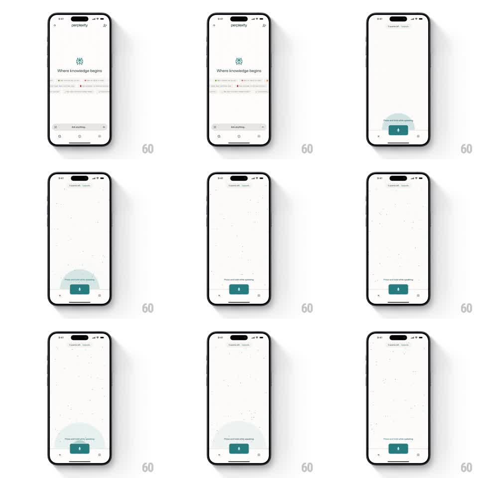

Media
Frame-by-frame

Rebuild this animation 1:1: Perplexity's voice-search prompt - a soft circular halo pulses out of the hold-to-talk mic button under its tooltip.

Rebuild this animation 1:1: Perplexity's voice-search prompt - a soft circular halo pulses out of the hold-to-talk mic button under its tooltip. ## Integration Integration: stack-agnostic spec - springs given as stiffness/damping, timed motions as duration + curve; map every value to your framework and animation library of choice. ## Scene The voice screen: a dimmed minimal list behind, a "Press and hold while speaking" tooltip label centered low, and a teal rounded-square mic button at bottom center, ringed by a soft teal glow. ## Motion spec Pattern: periodic expanding halo, ~2s loop. - A soft circular halo expands from the mic button's center (scale 1 to 2.2 of the button size) while fading from 25% to 0 opacity (1.4s, ease-out), repeating every 2s. - The button keeps a constant faint glow between pulses. - The tooltip text stays fixed above the button; the pulse originates below the text at the button. - On press-and-hold: the halo stops, the button scales up slightly (1.1, 150ms) and its glow intensifies to full opacity. - On release: the button returns (150ms) and the idle pulse resumes. ## Calibration - The pulse is a guide, not an alarm - soft edges, low opacity, slow expansion. - The glow color matches the button's teal; a white ring reads as a generic ripple. ## Reduced motion Static glow, no expanding pulse. ## Don't miss - The pulse expands as a filled soft disc, not a stroked ring. - The dimmed background list stays still - only the button area is alive.